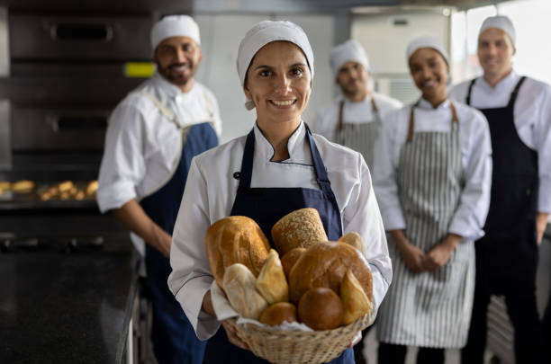

Une histoire de passion depuis 1989
Depuis plus de 30 ans, la Boulangerie Artisanale est un pilier du quartier. Fondée en 1989 par la famille Dupont, elle perpétue un savoir-faire traditionel transmis de génération en génération. Chaque jour, notre équipe met un point d'honneur à proposer des pains, viennoiseries et pâtisseries faits maison à partir d'ingrédients locaux et de qualité
Nos Valeurs
- Tradition: Nos recettes sont transmises de génération en génération.
- Authenticité: Farine de meunier, beurre AOP, levain naturel.
- Transmission: Nous formons les jeunes artisans au goût du travail bien fait.
- Proximité: Une boulangerie ancrée dans la vie de son quartier.
Notre Équipe
Derrière chaque baguette croustillante et chaque croissant doré se cache une équipe passionnée par son métier. Pierre, notre boulanger, se lève chaque jour à l’aube pour pétrir et cuire avec soin nos pains artisanaux.
Sophie, pâtissière créative, imagine chaque semaine de nouvelles douceurs faites maison. En boutique, Clara et Léo vous accueillent avec le sourire, toujours prêts à vous conseiller.
C’est cette équipe soudée, professionnelle et proche de ses clients qui fait l’âme de notre boulangerie.
Ce que disent nos clients
"Chez eux, le pain a le goût de mon enfance. C’est simple : je ne vais plus ailleurs."
Madame Martin
"Une équipe accueillante, des produits de qualité et une ambiance familiale."
Thomas et Camille"